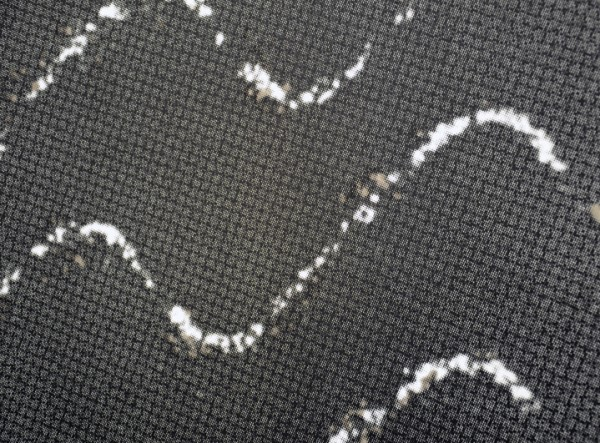
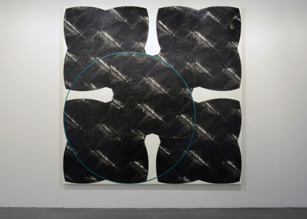
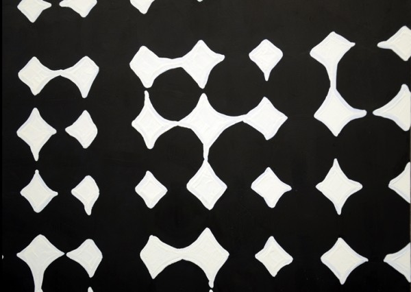

-
We Can Build You
by Matthew Hassell March 4, 2013
Francis’s Interference (detail), 2012. courtesy of MINUS SPACE, Brooklyn.
To borrow her own words, you can’t really accuse Linda Francis of being obvious. Like anything worth having, her work takes a little bit of unpacking in order to approach its fertile core. Once you get there though, there’s no escaping your involvement. Truly a frenetically active thinker and invested abstractionist, the initially cryptic nature of her work comes from Francis’ interest and understanding of a dizzyingly wide range of academic topics and visual ideas.
Her new show titled We Can Build You is currently open at MINUS SPACE in Dumbo. The work is gorgeous and at first glance quite reductive. In taking time to peel back the layers, one comes to realize there are actually very deep metaphysical notions at work here, ideas that reach forth to tickle every corner of human consciousness — they poke at who we are as a species.
I had the extremely fortunate opportunity to have dinner with Linda in order to discuss the work, and sat across from her lapping it all up while she calmly rolled gem after gem of life altering art knowledge nuggets into my open hands. I have over two hours of recorded conversation to prove it.
The majority of the work in the show comes from an investigation that stems from playing with an image acquired from a friend who was working on a thermodynamic issue for NASA. The image is a close up of the structure of the skin produced to clothe a space shuttle that was in use in the 1990’s. Working with painting hand articulated geometric forms as well as screen prints of images manipulated by computer, the artist creates immersive abstractions that simultaneously reference the structure of the infinitesimal and the galactic in scale.
Repeating and overlaying the image over and over again, Francis creates a body of work that converse with the senses in a variety of stimulating ways. As a skilled geometric abstractionist the first venue of experimentation naturally comes across visually. The best example of this would be the large work on panel to your right as you enter the gallery. One of a number of works in the show titled Interference, it is a large 87 inch square work of oil and screen print on panel.
This painting exhibits an overlay of five quatrefoil shapes of deep black printed ink, one to each corner of the panel and the fifth overlapping each in its position at the center of the image. In a move that Francis repeats throughout the other works of the same title in the show, the source image has been alternately layered until its original appearance is obscured through repetition. The result leaves the viewer with a visual static of hazy white forms peeking through a field of murky black. From here a circle has been painted in vibrantly contrasting green oil paint, returning the eye to the undeniable flatness of the panel while placed to the bottom left of the composition so that its circumference intersects with each of the screen printed constructions at one point of its trajectory or another.
Here the overlay of the source image creates a repetitious visual hum within the layered quatrefoil as the white of the image becomes muddled and takes on new forms in the computer’s attempt to make visual sense of the amalgamation of forms condensed on top of one another.
Francis’s Interference (detail), 2012. courtesy of MINUS SPACE, Brooklyn.
The best part of viewing this work comes not from any of the painterly decisions made by the artist, but from the phenomenological experience of actually laying eyes on the painting in lived time. In a deviation from her usual palette of reds and blacks, the phthalo green circle seems a bit of a departure — until one moves in for a closer look. When focusing on the green paint for any extended period and returning your gaze to the rest of the painting, a momentary flash of red skips across the image in the time your eye takes to adjust from the impression the green pigment has left on your retina. The inescapable power of red seems so deeply ingrained in the artist’s practice that it emerges anyway, even as she retreats to the most distant reaches of the chromatic spectrum.
The work facing you as you walk into the space is one of three long horizontal compositions. Displaying the source image abstracted into sinuous energy waves of white static, this work is also titled Interference. It shows the source image’s ability to be abstracted into multiple visual forms, as it has here become a playful use of sine waves rolling from one side of the wide black expanse to the other. Francis is almost using the computer as an advancement of her brush in this case, working her image into itself in such a way that unaccounted-for geometries emerge, discovered by happenstance and enabled to become the subject of her painterly inquiry.
This injection of static that the computer provides mimics Francis’ uneasy feeling about our dependence on artificial interaction. The nature of the machine is here used against itself in a way, exploited for its ability as an intrinsically exact machine, turned around in spite of itself to become a source of chaotic and superfluous visual information.
To Francis, the implications of this result point to a deeper problem we face what this as artists and humans. She is aware of the unnatural divide we feel between our more conscious intellectual thoughts and our raw emotions, and how the increasingly available distraction provided by technology is driving a wedge between these two integral pieces of our consciousness. It seems to become worse with every generation.
Given this insight, Interference seems a clever title for this string of works when considered from more than one perspective.
Francis’s Interference (detail), 2012. courtesy of MINUS SPACE, Brooklyn.
Moving her materials in the opposite direction, the titular work, We Can Build You is an exercise in hyper focus zoom, which can be found on the left wall of the space. In investigating similarities in form through a magnified view of her source image, often until the dot matrix used by the printing process to create an image is exposed, Francis paints a conversation bringing into focus the interrelated nature of all things. We Can Build You is a title borrowed from a work by Philip K. Dick in which the protagonist becomes entrapped in the author’s usual paranoid breakdown. A person deep within a society where simulacra is the nature of the day, Louis Rosen soon finds that he can no longer tell the difference between a replica and an original, eventually even when encountering a being manufactured in his own likeness. Taking the notion of being able to manipulate something on an atomic level, this work is interesting in it’s ability to stand alone as a purely formal relationship between circles and grids, while also being recognizable as a study of the way images are manufactured at the tiniest of increments.
Francis sees abstraction as an extension of human consciousness. In our time together, I prompted her to talk about whether she considered the interrelated nature of all things, a notion I thought comes to the forefront in her play with scale throughout the works in the show. She responded –
I definitely think so, of course. I mean, I don’t think you can escape that, not if you look at things on the scale that I do…I think maybe I’m a romantic. I think I’m a romantic in the sense that I think these things mean something, but I think abstractions are not abstractions, I think they are the way we think and the way we are.
She went on to explain, ‘going along with my crazy idea that we are what abstraction is, that I think making it is feeling it.’
It’s a notion that seems hard to refute. We are, after all, made up of tiny spinning atomic forms rotating in every direction at once simultaneously. It’s a model that seems eerily familiar to the way we understand our galaxy — a thought to which, Linda explains, “you might want to take the point of view that the reason we see it that way is because that’s the way we are constructed.”
To put it simply, Francis’s work is something of an intellectual feast. She is one of those people whose baffling understanding paired with a grasp of such a wide range of ideas allows her to distil profound notions into rather approachable terms. Seemingly simplistic at first, when prodded to explain, her thought process becomes clear in such a way that the truth of her statements seems inescapable. Her work is very similar, which makes perfect sense. The abstractions she chooses to pursue are derived of massively relatable notions reduced down to concise forms, which then open back up to their originally far-reaching impact given a little investigation by the viewer.
Francis’s Interference (detail), 2012. courtesy of MINUS SPACE, Brooklyn.
The ideas presented by the work are certainly intriguing to play around with, at least to my mind. The best part is that we can squeeze all this metaphysical conjecture from her seemingly reduced geometric abstractions. The way it puts the viewer’s mind to work is a beautiful thing. Beauty as it turns out, just happens to be one of the only things about Linda’s work that she does not see as her own doing. Apparently it is intrinsic to the language of geometry:
I just try to be very plain about it, I just state the conditions, but I suppose all those conditions are aesthetic ones, really. I mean – counting, the beauty of numbers, people talk about the beauty of numbers all the time. So really these things are naturally beautiful, interval is really beautiful. I mean, who doesn’t like a triangle?
The only thing I can think to say is, “no one I trust.” It comes across as a clever quip in the moment, but really it’s true. The more I think about it, I think she is right. But maybe she’s not, you are entirely able to disagree, but this is all really just idle musing until you go experience the show for yourself. So go ahead, it’s only on view until March 23rd — a miniscule amount of time in cosmic terms.
Linda Francis: We Can Build You is on view at MINUS SPACE, 111 Front Street, Suite 226 Brooklyn, NY 11201 through March 23, 2013.